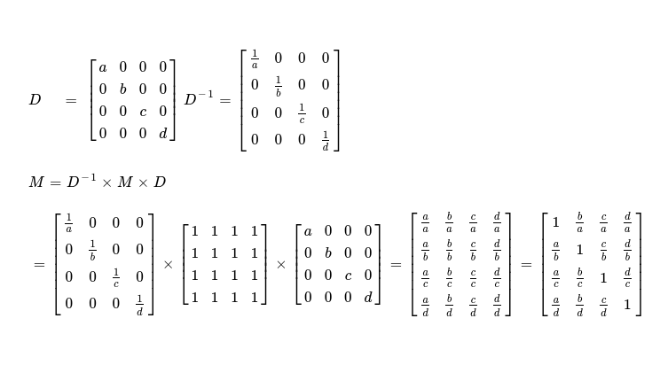

Two weeks ago I wrote about Parallel Similarity Transformation, which is useful iterative method for finding maximum eigen value of positive square matrices, along with respective eigen vector such that following equality is satisfied. I used SYCL DPC++ for implementing kernels, but in last weeks I discovered ways to improve upon my previous work. So today I decided to write about how I optimize similarity transformation kernels and present you with updated benchmark results.
Av = λv
A = positive square matrix
λ = (max) eigen value
v = (respective) eigen vector
I'll not go through algorithmic steps this time, rather I'll pick each kernel required for computing maximum eigen value of positive square matrix and figure out ways how it can be improved. Following five kernels are required for performing parallel similarity transformation.
- kernelSumAcrossRows
- kernelMaxInVector
- kernelComputeEigenVector
- kernelSimilarityTransform
- kernelStopCriteria
I'll start with first one. All this kernel should do is simply compute sum of values stored in cells along each row of matrix. AN x N being a square matrix, it needs to output a N-element vector where ith cell should hold sum of ith row of matrix. I want to perform N-many parallel summations --- as simple as that. With this requirement in mind, I'll write following kernel.
// @note this is a pseudocode !
// kernelSumAcrossRows_v0
//
// check https://github.com/itzmeanjan/eigen_value/blob/e584beda3b05759673bce5af7ebed95fd262dff2/benchmarks/benchmark_similarity_transform.cpp#L39-L53
float *mat = ...; // matrix I'm operating on of dimension N x N
float *vec = ...; // row sum result vector of length N
N = 1 << 10;
B = 1 << 5;
q.parallel_for(nd_range<2>{{N, N}, {1, B}}, [=] (nd_item<2> it) {
const size_t r = it.get_global_id(0);
const size_t c = it.get_global_id(1);
float cell = *(mat + r * N + c); // value stored here
atomic_add(*(vec + r), cell);
});
A high-level look at this kernel reveals it's not good idea to atomically compute sum of all elements along each row of AN x N. N-many memory locations of result vector of length N, are being operated on atomically to avoid any chance of data race. Each cell of result vector of length N, will be accessed N-many times by N-many designated work-items. This results into N2 global memory access, which is expensive. I'd like to reduce global memory access as much as possible. One simple way to do this in current context is to make use of reduction function of SYCL DPC++, which will help me in computing sum of all elements held by all work-items of subgroup. Using this subgroup method maps well to underlying SIMD assembly function, which reduces communication cost, but does compute sum of all values held by subgroup participants. Finally I'll use atomic write to update sum in designated row of result vector, living in global memory, helping me to reduce global memory access to N2 / B, given that B is subgroup width. I'll express this with following kernel.
// @note this is a pseudocode
// kernelSumAcrossRows_v1
//
// check https://github.com/itzmeanjan/eigen_value/blob/e584beda3b05759673bce5af7ebed95fd262dff2/benchmarks/benchmark_similarity_transform.cpp#L86-L106
q.parallel_for(nd_range<2>{{N, N}, {1, B}}, [=] (nd_item<2> it) {
const size_t r = it.get_global_id(0);
const size_t c = it.get_global_id(1);
float cell = *(mat + r * N + c);
// reduction method called over subgroup work-items
//
// should result into better SIMD usage
float subgroup_sum = reduce_sum(cell);
// only sub-group leader accesses global memory one time !
if(leader()) {
atomic_add(*(vec + r), subgroup_sum);
}
});
This kernel is indeed better than previous matrix row sum kernel, where N2 global memory accesses were performed. But I see one more way to attempt further optimization. I want to make use of faster local memory so that subgroup leader can atomically update respective work-group's sum, stored in designated local memory. It's possible to have multiple subgroups in a work-group, that way I'm able to reduce global memory access to another factor. Now only subgroup leaders are accessing local memory to update respective work-group's row sum, with their own subgroup level row sum. Finally after all work-items of some work-group are done, only work-group leader will access designated cell of global memory to atomically update respective row sum. With this update kernel should only access global memory N2 / B times, when B = work-group size, which should preferrably be greater than subgroup size. My final update to matrix row sum kernel looks like below.
// @note this is a pseudocode
// kernelSumAcrossRows_v2
//
// check https://github.com/itzmeanjan/eigen_value/blob/d27f64c27a7a38c7b1038a49563ec4ce47e9ac19/similarity_transform.cpp#L90-L135
float *local_memory = ...; // local-data-share of size 1
q.parallel_for(nd_range<2>{{N, N}, {1, B}}, [=] (nd_item<2> it) {
if(leader()) {
// initialised by work-group leader
//
// if not done, it might prove costly
*local_memory = 0.f;
}
// only after all work-items of work-group
// reaches this point, move forward !
barrier();
const size_t r = it.get_global_id(0);
const size_t c = it.get_global_id(1);
float cell = *(mat + r * N + c);
// reduction method called over subgroup work-items
//
// should result into better SIMD usage
float subgroup_sum = reduce_sum(cell);
// subgroup leader should only update
// subgroup level row sum in work-group
// local memory
if (leader()) {
atomic_add(*local_memory, subgroup_sum);
}
// only after all work-items of work-group
// reaches this point, move forward !
barrier();
// only work-group leader accesses global memory one time !
if(leader()) {
atomic_add(*(vec + r), *local_memory);
}
});
Now it's good time to run these three kernels on both CPU and GPU, with various matrix dimension, to see how they perform. Following section shows result of running three variants of row sum kernel on CPU.
running on Intel(R) Xeon(R) CPU E5-2686 v4 @ 2.30GHz
[kernel] Sum Across Rows of Matrix (v0)
128 x 128 2.688 ms
256 x 256 0.602 ms
512 x 512 1.294 ms
1024 x 1024 5.474 ms
2048 x 2048 20.816 ms
4096 x 4096 79.719 ms
8192 x 8192 315.3 ms
[kernel] Sum Across Rows of Matrix (v1)
128 x 128 1.235 ms
256 x 256 0.219 ms
512 x 512 0.363 ms
1024 x 1024 1.04 ms
2048 x 2048 3.746 ms
4096 x 4096 14.896 ms
8192 x 8192 59.13 ms
[kernel] Sum Across Rows of Matrix (v2)
128 x 128 0.23 ms
256 x 256 0.431 ms
512 x 512 0.683 ms
1024 x 1024 2.12 ms
2048 x 2048 8.167 ms
4096 x 4096 32.721 ms
8192 x 8192 126.747 ms
I see for random square matrix of dimension N x N, second variant of row summation kernel performs best. I expected third variant to perform at least as same as second one, though it seems second one is ~2x faster compared to last kernel. I compiled these kernels Ahead of Time, so that runtime kernel compilation time can be saved and launch will be faster. As I've access to GPU, I've also ran it there and following are benchmark results I obtained.
running on Intel(R) Iris(R) Xe MAX Graphics [0x4905]
[kernel] Sum Across Rows of Matrix (v0)
128 x 128 7.844 ms
256 x 256 47.783 ms
512 x 512 298.784 ms
1024 x 1024 1652.19 ms
2048 x 2048 7182.5 ms
4096 x 4096 35201.8 ms
8192 x 8192 191747 ms
[kernel] Sum Across Rows of Matrix (v1)
128 x 128 0.536 ms
256 x 256 0.531 ms
512 x 512 1.395 ms
1024 x 1024 5.726 ms
2048 x 2048 22.359 ms
4096 x 4096 101.141 ms
8192 x 8192 502.316 ms
[kernel] Sum Across Rows of Matrix (v2)
128 x 128 0.617 ms
256 x 256 0.624 ms
512 x 512 1.378 ms
1024 x 1024 3.934 ms
2048 x 2048 14.186 ms
4096 x 4096 54.654 ms
8192 x 8192 220.202 ms
Naive implementation i.e. first variant is performing much poor on GPU, but that's what I expected as all work-items are attempting to update global memory atomically, congestion should be high. I see this time third variant shines ! As I understand, in GPU it has dedicated local memory, which provides faster access compared to global memory. That's why third variant, where I make use of local memory to reduce global memory access and only work-group leaders access global memory one time to atomically update total row sum, performs better than others --- almost 2x faster than second variant, its closest competitor.
Now I'd like to spend some time in explaining how I'd attempt to write second kernel i.e. kernelMaxInVector. Business logic of this kernel should just find out maximum value from a given vector of size N. A naive way that comes to my mind first, is using atomic maximum value finder, where each work-item ( respresenting each cell of vector ) attempts to atomically compare its holding with some known global memory location, where finally maximum value is supposed to be stored. As my interest is finding out maximum value of vector, I'll have to initialize result memory location with 0. I'll write following kernel, depicting my naive attempt.
// check https://github.com/itzmeanjan/eigen_value/blob/cbbe178cc36bfe3b3e4a7e9d38d311145a9ff742/benchmarks/benchmark_similarity_transform.cpp#L164-L175
float *vec = ...; // source vector of length N
float *max = ...; // result memory location
*max = 0.f; // zero initialise
N = 1 << 10;
B = 1 << 5;
q.parallel_for(nd_range<1>{N, B}, [=] (nd_item<1> it) {
const size_t r = it.get_global_id(0);
float cell = *(vec + r);
// each work-item attempts to atomically compare
// its holding with designated result memory location
//
// only if this work-item's holding has value larger than
// what's currently stored in result, it'll be updated with
// this work-item's held value
atomic_max(*max, cell);
});
A next step that comes to my mind, for improving max value in vector finder kernel, is using SYCL DPC++ reduction kernel
for finding maximum value among all work-items of certain subgroup. This results in better mapping to underlying SIMD instructions.
Finally only subgroup leader will attempt to compare subgroup's maximum value with result in global memory location, which naturally
results into reduced access of global memory. In previous kernel, all work-items would have to compare their holding
with target in global memory, which must result into N-many global memory accesses. But with this improvement, global memory access should
be reduced to N / B, when N = vector size, B = subgroup size.
Following is my attempt in writing this improved variant of kernel.
// check https://github.com/itzmeanjan/eigen_value/blob/cbbe178cc36bfe3b3e4a7e9d38d311145a9ff742/benchmarks/benchmark_similarity_transform.cpp#L208-L226
q.parallel_for(nd_range<1>{N, B}, [=] (nd_item<1> it) {
const size_t r = it.get_global_id(0);
float cell = *(vec + r);
// subgroup level maximum value
// computed using SYCL DPC++ reduction function
float sub_max = reduce_max(cell);
// only subgroup leader attempts to
// compare subgroup's maximum value with global memory
//
// updates same only if atomic comparison says target
// global memory has smaller value compared to
// subgroup's maximum value
if(leader()) {
atomic_max(*max, sub_max);
}
});
As I understand, second variant of max in vector kernel should perform better than first variant, but I've another idea
which I'd like to implement and benchmark. In quest of finding a way to reduce global memory access as much as possible,
I bring in idea of local memory, where all subgroups of certain work-group will help in storing maximum value of work-group
itself. And finally when all work-items of that work-group are done, only work-group leader will attempt to access
global memory and perform atomic comparison to decide whether updation to result can be performed or not. This kernel
should reduce global memory access to N / B, when N = vector size, B = work-group size. Note, this technique will only
prove fruitful if work-group size is larger than subgroup size, specifally I'll set work-group such that it's evenly
divisible by subgroup size, which I'll specify using attribute understandable by dpcpp compiler.
Following is the attribute required for fixing subgroup size for some kernel.
// check https://github.com/itzmeanjan/eigen_value/blob/cbbe178cc36bfe3b3e4a7e9d38d311145a9ff742/similarity_transform.cpp#L161
q.parallel_for(nd_range<1>{N, B}, [=] (nd_item<1> it) [[intel::reqd_sub_group_size(32)]] {
// kernel body
});
My final attempt in improving vector max value finder kernel is as below.
// check https://github.com/itzmeanjan/eigen_value/blob/cbbe178cc36bfe3b3e4a7e9d38d311145a9ff742/similarity_transform.cpp#L159-L203
float *local_memory = ...; // local-data-share of size 1
q.parallel_for(nd_range<1>{N, B}, [=] (nd_item<1> it) {
// only work-group leader executes this block
if(leader()) {
// explicit initialisation of local memory
//
// otherwise result might be wrong
// if we rely on default initialised value
*local_memory = 0.f;
}
// only after all work-items of work-group
// reaches this point, move forward !
barrier();
const size_t r = it.get_global_id(0);
float cell = *(vec + r);
float sub_max = reduce_max(cell);
// subgroup leader should only update
// subgroup level row sum in work-group
// local memory
if (leader()) {
atomic_max(*local_memory, sub_max);
}
// only after all work-items of work-group
// reaches this point, move forward !
barrier();
// only work-group leader accesses global memory one time !
if(leader()) {
atomic_add(*max, *local_memory);
}
});
This is a time to benchmark three implementations for finding maximum value in vector. AOT compiled kernels on CPU perform as below.
running on Intel(R) Xeon(R) CPU E5-2686 v4 @ 2.30GHz
[kernel] Max Value in Vector (v0)
65536 0.153 ms
131072 0.207 ms
262144 0.319 ms
524288 0.54 ms
1048576 0.981 ms
2097152 1.853 ms
4194304 3.622 ms
8388608 7.379 ms
16777216 14.867 ms
33554432 28.477 ms
[kernel] Max Value in Vector (v1)
65536 0.149 ms
131072 0.197 ms
262144 0.303 ms
524288 0.509 ms
1048576 0.928 ms
2097152 1.756 ms
4194304 3.421 ms
8388608 7.159 ms
16777216 14.027 ms
33554432 27.881 ms
[kernel] Max Value in Vector (v2)
65536 0.217 ms
131072 0.328 ms
262144 0.506 ms
524288 0.873 ms
1048576 1.439 ms
2097152 2.78 ms
4194304 5.298 ms
8388608 11.136 ms
16777216 22.701 ms
33554432 44.979 ms
I notice first variant, where all work-items are atomically comparing self value with global memory's
target value, doesn't perform that bad on CPU. It may be due to that CPU has better atomic operation support.
The final variant, which I expected to do better, is probably sufferring from the fact that on CPU, there's no
explicit local memory. Making subgroup leaders to write to local memory first, for finding work-group local maximum value
and then only work-group leader contributing in finding maximum value of vector by accessing/ comparing global memory ---
is incurring more cost than benefit, on CPU.
In below table, I present you with benchmark results I obtain after running same kernels on GPU. As GPU is less capable
in executing atomic operations, compared to CPU, I see first variant performing worst on GPU. In second variant, subgroup's
work-items find maximum value using SYCL DPC++ reduction function, which is performing lot better as I expected. In this case,
contention should also be lower, as only subgroup leaders are supposed to be atomically accessing global memory. The final
variant, where I introduced local memory, so that I can reduce scope of global memory access by another factor, letting only
workgroup leaders atomically access global memory, performs almost as same as second variant. May be third technique doesn't bring
much on table, but it's another sound & efficient way to write this kernel.
running on Intel(R) Iris(R) Xe MAX Graphics [0x4905]
[kernel] Max Value in Vector (v0)
65536 0.588 ms
131072 0.758 ms
262144 1.096 ms
524288 1.832 ms
1048576 3.315 ms
2097152 6.373 ms
4194304 12.108 ms
8388608 23.492 ms
16777216 46.511 ms
33554432 91.242 ms
[kernel] Max Value in Vector (v1)
65536 0.459 ms
131072 0.609 ms
262144 0.815 ms
524288 1.2 ms
1048576 2.101 ms
2097152 3.853 ms
4194304 7.278 ms
8388608 13.92 ms
16777216 26.941 ms
33554432 53.695 ms
[kernel] Max Value in Vector (v2)
65536 0.475 ms
131072 0.613 ms
262144 0.834 ms
524288 1.222 ms
1048576 2.155 ms
2097152 3.893 ms
4194304 7.303 ms
8388608 13.961 ms
16777216 27.154 ms
33554432 53.736 ms
Next kernel in my list, kernelComputeEigenVector, is very simple to implement, where each element of result vector is computed using following formula.
max_val = max(src_vec);
for i in 0..n {
res_vec[i] *= src_vec[i] / max_val;
}
This problem itself is very parallel, no data dependency, so I'll write following kernel for parallelly computing result eigen vector from row sum vector and max value in row sum vector.
// check https://github.com/itzmeanjan/eigen_value/blob/cbbe178cc36bfe3b3e4a7e9d38d311145a9ff742/benchmarks/benchmark_similarity_transform.cpp#L289-L294
float *row_sum_vec = ...; // row summations of matrix of dimension N x N
float *max_val = ...; // max value in above row sum vector
float *res_vec = ...; // result vector of size N
N = 1 << 10;
B = 1 << 5;
q.parallel_for(nd_range<1>{N, B}, [=] (nd_item<1> it) {
const size_t r = it.get_global_id(0);
*(res_vec + r) *= *(row_sum_vec + r) / *max_val;
});
Notice, value stored in max_val memory location is in global memory, which is accessed N-many times during execution of this kernel. But this value is somewhat constant in this context, so I'd like to use some technique which will help me in reading this value from global memory only once. After that read value will be distributed among a set of work-items, not requiring each of them to read from global memory. This will result into reduced global memory access, which contributes in making whole compute pipeline faster. The set of work-items which will read from global memory only once, is called subgroup. As subgroups map well to underlying SIMD intrinsics, resulting code running on accelerator should perform better. My take at modifying this kernel is as simple as adding group_broadcast method when reading from memory location held behind max_val.
// check https://github.com/itzmeanjan/eigen_value/blob/1d189ac2973d69ac330785bc74335c8101ff0bee/similarity_transform.cpp#L222-L236
q.parallel_for(nd_range<1>{N, B}, [=] (nd_item<1> it) {
const size_t r = it.get_global_id(0);
// this will result into only one work-item in subgroup
// reading from global memory location, behind `max_val`
*(res_vec + r) *= *(row_sum_vec + r) / group_broadcast(*max_val);
});
Benchmarking last two kernels, used for computing eigen vector, on CPU gives me following result. It looks both kernel variants perform almost same on CPU and my speculation of resulting into better SIMD usage in case of second variant of kernel, doesn't seem to be true.
running on Intel(R) Xeon(R) CPU E5-2686 v4 @ 2.30GHz
[kernel] Eigen Vector Computation (v0)
65536 1.057 ms
131072 0.122 ms
262144 0.169 ms
524288 0.236 ms
1048576 0.397 ms
2097152 0.71 ms
4194304 1.682 ms
8388608 4.186 ms
16777216 8.177 ms
33554432 16.149 ms
[kernel] Eigen Vector Computation (v1)
65536 0.124 ms
131072 0.134 ms
262144 0.167 ms
524288 0.262 ms
1048576 0.382 ms
2097152 0.828 ms
4194304 1.878 ms
8388608 4.164 ms
16777216 8.156 ms
33554432 16.293 ms
Benchmarking on GPU, I see similar trend that both variants are performing almost same. I believe this is due to either I'm using group_broadcast improperly or it's not working as expected.
running on Intel(R) Iris(R) Xe MAX Graphics [0x4905]
[kernel] Eigen Vector Computation (v0)
65536 0.096 ms
131072 0.107 ms
262144 0.109 ms
524288 0.153 ms
1048576 0.295 ms
2097152 0.437 ms
4194304 0.902 ms
8388608 1.754 ms
16777216 3.447 ms
33554432 6.827 ms
[kernel] Eigen Vector Computation (v1)
65536 0.1 ms
131072 0.11 ms
262144 0.112 ms
524288 0.18 ms
1048576 0.301 ms
2097152 0.496 ms
4194304 0.885 ms
8388608 1.733 ms
16777216 3.497 ms
33554432 6.904 ms
Next kernel I'll write is kernelSimilarityTransform, which is an important part in compute pipeline of whole Similarity Transformation method. This kernel itself helps in computing next iteration's matrix using following technique. I've already found row sum vector of a matrix, which I'll use in this kernel. Assume I've one vector of length N, forming one diagonal matrix and its respective inverse matrix is trivial.
// here N = 4
vec = [a, b, c, d]
d = diag([a, b, c, d])
d^-1 = diag([1/ a, 1/ b, 1/ c, 1/ d])
Next iteration's matrix is computed as below.
// M = current matrix of N x N
// d = diagonal matrix formed with row-sum vector
// d^-1 = inverse of above diagonal matrix
M = d^-1 x M x d // = matrix to be used in next iteration

This is a matrix multiplication problem, but two of three operands being diagonal matrices and two matrices being inverse of one another, I can reduce multiplication problem to a reduce variant, as I derive it in above diagram. Writing a parallel variant of this is pretty easy.
// check https://github.com/itzmeanjan/eigen_value/blob/1d189ac2973d69ac330785bc74335c8101ff0bee/similarity_transform.cpp#L271-L293
float *mat = ...; // matrix of dimension N x N
float *vec = ...; // row sum vector of size N
float *loc_row = ...; // vector of length 1, in local memory
float *loc_col = ...; // vector of length B, in local memory
N = 1 << 10;
B = 1 << 5;
q.parallel_for(nd_range<2>{{N, N}, {1, B}}, [=] (nd_item<2> it) {
const size_t r = it.get_global_id(0);
const size_t c = it.get_global_id(1);
// 1D unique local identifier of work-item in work-group
const size_t ll_id = it.get_local_linear_id(); // ∈ [0, B)
// 1D unique global identifier of work-item in execution space
const size_t gl_id = it.get_global_linear_id(); // ∈ [0, N)
// --- caching row-sum vector into local memory ---
// only work-group leader does this
if(leader()) {
loc_row[0] = *(vec + r);
}
loc_col[ll_id] = *(vec + gl_id % B);
// wait until all work-items of work-group reach here
barrier();
// --- caching ends ---
*(mat + r * N + c) *= (1.f / loc_row[0]) * loc_col[ll_id];
});
This kernel makes use of local memory to cache diagonal matrix's ( read row-sum vector ) cells, reducing global memory access. Benchmarking this kernel on CPU, GPU compares as below. As GPUs possess explicit local memory, benefits of using local memory is clearly visible on second column in following diagram.
[kernel] Next Matrix Computation
dim GPU CPU
128 x 128 0.059 ms 0.152 ms
256 x 256 0.064 ms 0.23 ms
512 x 512 0.092 ms 0.504 ms
1024 x 1024 0.192 ms 1.699 ms
2048 x 2048 0.594 ms 6.497 ms
4096 x 4096 2.412 ms 25.806 ms
8192 x 8192 9.962 ms 103.048 ms
Final kernel in pipeline checks row-sum vector and decides whether we should go to next iteration or not. When iterative method converges to result, all values in row-sum vector should be very close and absolute difference between a pair of values should be lesser than some predefined epsilon value. Let us take an example vector to demonstrate how I can write one parallel kernel for same.
EPS = 1e-3
vec = [a, b, c, d]
// stop if following evaluates to True
abs(vec[0] - vec[1]) < EPS && abs(vec[1] - vec[2]) < EPS && abs(vec[2] - vec[3]) < EPS && abs(vec[3] - vec[0]) < EPS
// --- 👇 is a generic rewrite of above condition check ---
N = len(vec);
stop = True;
for i in 0..N {
stop &= abs(vec[i] - vec[(i + 1) % N]) < EPS;
}
if(stop) // stop iteration
else // compute next iteration's matrix
For a vector of length N, I'll kick off N work-items where ith work-item accesses row-sum vector's ith and (i+1)th indices, for finding absolute difference between a pair of consequtive cells. Notice for work-item with index i, attempting to access global memory with index (i+1) should result into segmentation fault. I should be accessing index i and (i+1) % N of row-sum vector from each work-item. Implementing such a kernel is as easy as below.
float EPS = 1e-3;
float *row_sum = ...; // row-sum vector of length N, in global memory
uint *stop = ...; // status in global memory, whether converged or not
*stop = 1U; // initialization is required
q.parallel_for(nd_range<1>{N, B}, [=] (nd_item<1> it) {
const size_t r = it.get_global_id(0);
bool flag = all_of(abs(*(row_sum + r) - *(row_sum + (r+1) % N)) < EPS);
// only work group leader
if(leader()) {
atomic_min(*stop, flag ? 1 : 0);
}
});
This kernel is pretty simple, except all_of function, which is a group algorithm function, helps in evaluation of a boolean
predicate on all work-items of a work(/ sub)-group. The main problem I see with above kernel is duplicate access of global memory ( read row-sum vector ).
Each cell of row-sum vector is accessed twice. For reducing global memory access, I've to resort to subgroup shuffling algorithm, so that with in a subgroup
all work-items just read once from global memory, but then communicate among themselves, sharing their register cached values with other work-items in same
subgroup. I use one specific subgroup function --- shuffle_down, which helps me in obtaining ((i + 1) % B)th work-item's value
inside ith work-item, without explicitly accessing global memory. For sake of better demonstration purpose, let me take an example.
Say I've following vector, which I want to shuffle down, then assertion in following pseudocode block must hold.
vec = [0, 1, 2, 3]
// this is executed in data parallel context
float received = shuffle_down(vec[i], 1)
// then following must hold !
for i in 0..4 {
assert(received == vec[(i+1) % 4])
}
Pictorially it looks like below, when subgroup size is 4. If each of 4 work-items start with their initial value in first row, after shuffle_down by 1 place, their local register content should be updated to last row. This is somewhat I want to attain. I say somewhat because, this model doesn't fully fit my requirement when vector size N itself is greater than subgroup size, say B.
Check following scenario, where subgroup size is 4, but vector which is being shuffled down is of length 8. As shuffle_down method itself wraps around at subgroup boundary, produced result will look like below. But my expected result is something where index wrapping should happen at boundary of whole vector under operation.
As subgroup shuffling itself is not enough to satisfy requirement for checking stopping criteria, in parallel, I use conditional test based reading from global memory, while results into duplicate reads from global memory at subgroup boundary. Then rest of the flow is same.
// check https://github.com/itzmeanjan/eigen_value/blob/1d189ac2973d69ac330785bc74335c8101ff0bee/similarity_transform.cpp#L324-L412
// for full implementation of stopping criteria checker kernel
I can introduce local memory here, following same rationale as I did in some of previous kernels. Instead of letting all subgroup leaders atomically accessing global memory for updating status of whether convergence criteria has been satisfied in respective subgroup, I can just let work-group leaders do that part. In this updated setup, subgroup leaders update flag in local memory, where it's decided whether convergence criteria has been reached in work-group. And when all work-items of work-group reach one barrier, work-group leader will update work-group's result in global memory. Comparing benchmark of final variant of convergence criteria checker kernel shows much better performance on GPU.
[kernel] Stop ( Convergence ) Criteria Checker
dim CPU GPU
65536 0.707 ms 0.676 ms
131072 0.85 ms 0.634 ms
262144 1.435 ms 0.84 ms
524288 2.615 ms 1.248 ms
1048576 5.072 ms 2.246 ms
2097152 9.812 ms 3.964 ms
4194304 19.469 ms 7.339 ms
8388608 38.686 ms 13.655 ms
16777216 77.394 ms 26.739 ms
33554432 154.021 ms 54.011 ms